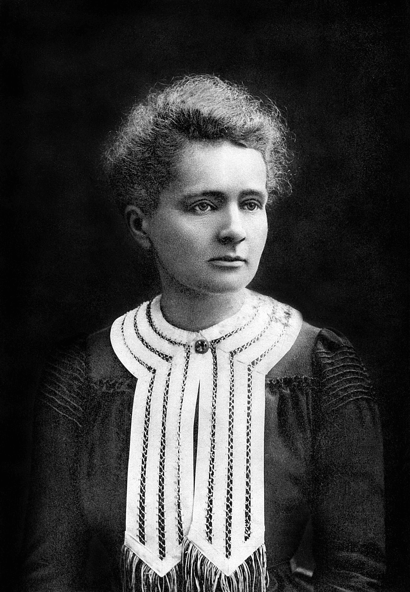
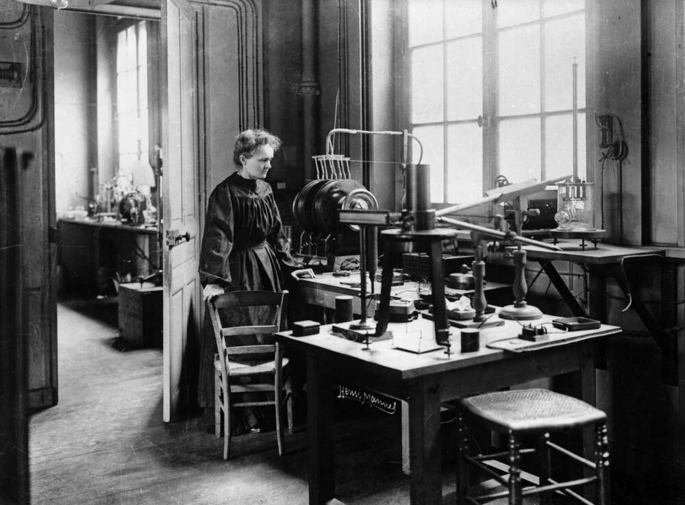
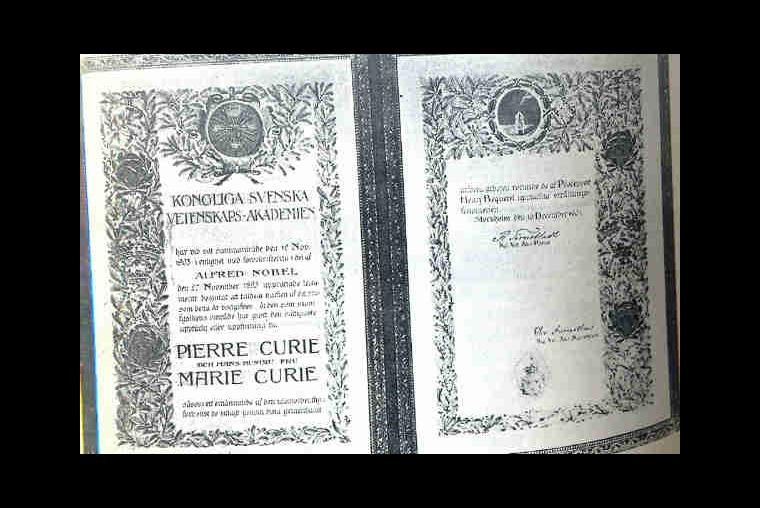

Marie Curie fue una científica polaca-francesa, reconocida por sus investigaciones sobre la radiactividad.
Biografía
Obra científica
Principales logros
- Descubrimiento del polonio
- Descubrimiento del radio
- Investigaciones sobre radiación
- Premio Nobel de Física
- Premio Nobel de Química
Galería


